Minecraft
A Minecraft nyílt világú sandbox videójáték, melyet a svéd Markus Persson indított útjára még 2009-ben és a Mojang adta ki 2011-ben. 2014-ben a Microsoft felvásárolta a játék fejlesztésével és kiadásával foglalkozó céget, ezzel együtt birtokukba került a Minecraft tulajdonjoga is.
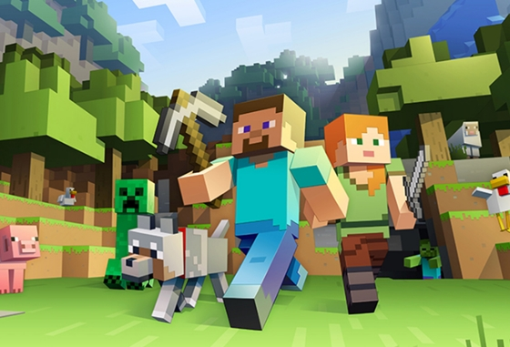
Minecraftban a játékosok egy blokkokból álló, pixeles, 3D világot fedezhetnek fel, felhasználhatják annak a nyersanyagait, eszközöket készíthetnek, építményeket építhetnek, továbbá a játék módjától függően harcolhatnak számítógép vezérelte ellenségekkel, vagy akár együttműködhetnek más játékosokkal. Öt játékmódja van: túlélő, kreatív, kaland, hardcore és megfigyelő mód. Továbbá a játék nehézségét is be lehet állítani egy négyfokozatú skálán, de a legtöbben a túlélővel és a kreatívval játszanak.
A játék több módban is játszható:
-a gyűjtögetésre, barkácsolásra és harcokra fókuszáló túlélő (túlélő)
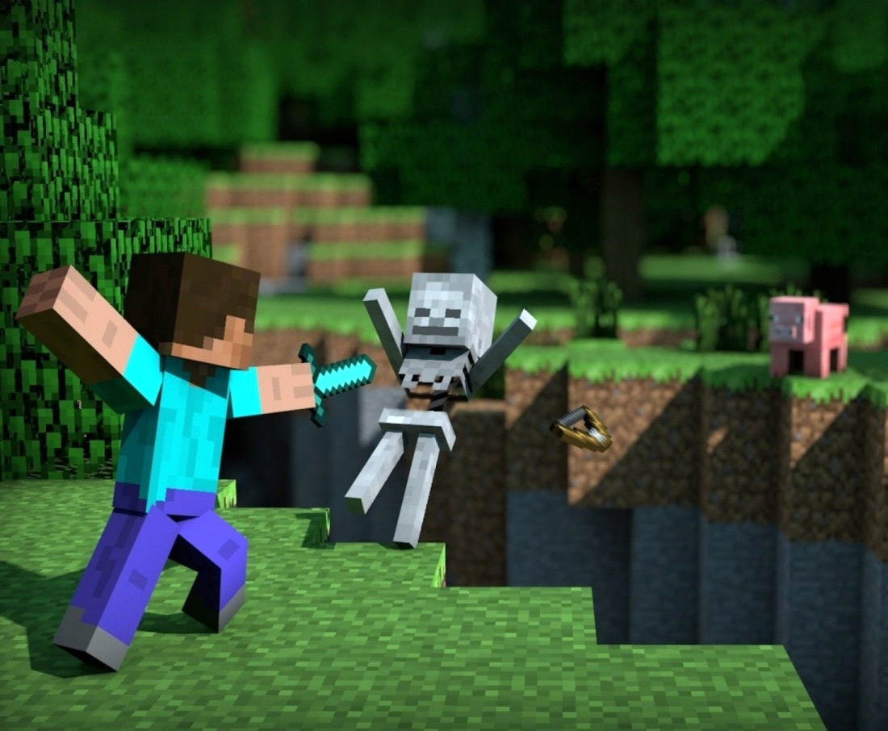
-végtelen forrással rendelkező kreatív módban (kreatív)
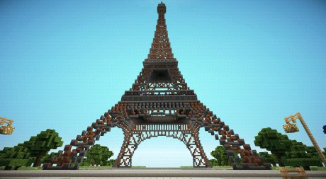
A Java alapú kiadásban különböző modokkal új játékmechanikával, tárgyakkal és grafikával lehet kiegészíteni a játékot.
A Minecraft nagy népszerűségnek örvend, számos díjat nyert el és minden idők egyik legbefolyásosabb játéka lett. A játék népszerűsítésében nagy szerepet játszott a közösségi média, paródiák, különböző adaptációk, ajándéktárgyak, illetve az évente megrendezésre kerülő MineCon. A játékot az oktatásban is felhasználták első sorban számítástechnikai rendszerek, virtuális számítógépek és hardverek terén. Számos spin-off is készült, ilyenek a 2015-ös Minecraft: Story Mode, a 2019-es Minecraft Earth és a 2020-as Minecraft Dungeons.
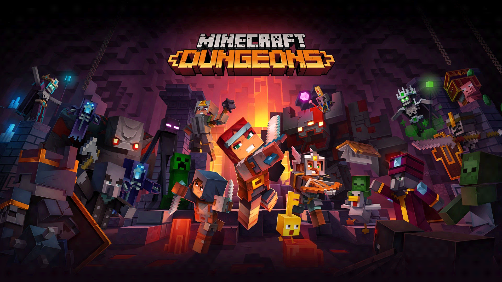
Játékmenet
A Minecraft háromdimenziós sandbox játék, melynek nincs konkrét kitűzött célja, szabadságot adva a játékosoknak, hogy maguk választhassák meg a játék menetét. Rendelkezik eredményrendszerrel, melyet a Java alapú kiadásban előrehaladásnak nevezik. A játék első sorban belső nézetből lehet játszani, de lehetőség van külső nézetbe is váltani. A világ nagy része háromdimenziós elemekből áll – első sorban kockákból és folyadékokból, amelyeket általában „blokkoknak” neveznek –, melyek különböző anyagokat ábrázolnak, mint például föld, kő, különböző ércek, fatörzs, víz és láva. Ezek a blokkok 3D rácsban vannak elhelyezve. A játékos ezeket a blokkokat „bányászhatja ki” és helyezhetik le, és így akár építményeket is készíthetnek.
A játékban megtalálható „vöröskő” (redstone) elektromos áramkörök és logikai kapuk készítésére használhatók, lehetővé téve összetett rendszerek elkészítését.
Itt egy példa hogy mit lehet csinálni redstone-ból:
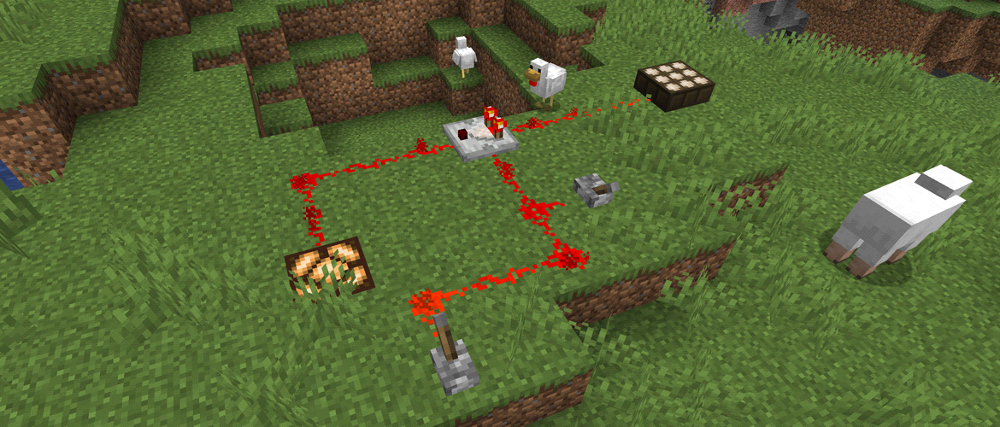
A játékvilág tulajdonképpen végtelen, és folyamatosan generálódik, ahogy a játékos felfedezi azt. Technikai okok miatt problémát okoz, ha a játékos rendkívül távoli helyekre kerül a játékban, ezért a pálya közepétől minden irányba 30-30 millió blokknyira akadályt képző falat hoztak létre. A nagy területek kezelésére a játék a világ adatait kisebb részekre chunkokra osztja fel, amelyeket csak akkor generál le, vagy tölt be, amikor a játékos a közelében tartózkodik. A játékvilág ezen kívül több éghajlatra (pl. sivatag, dzsungel, tundra) és felszínformára (pl. síkság, hegység) tagolódik. A játékban a nappal és az éjszaka folyamatosan követik egymást, egy teljes napszak alapértelmezetten 20 percig tart.
-sivatag
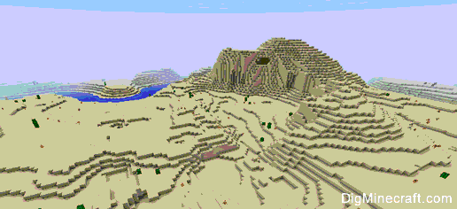
-dzsungel:
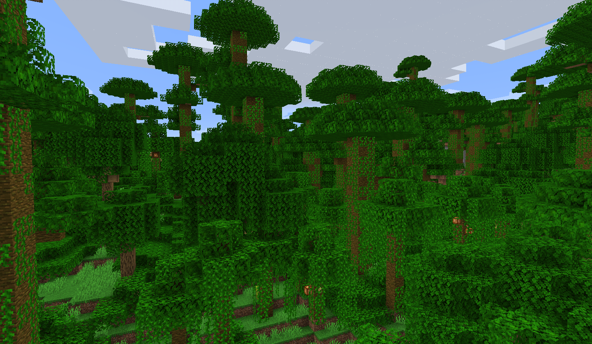
-tundra:
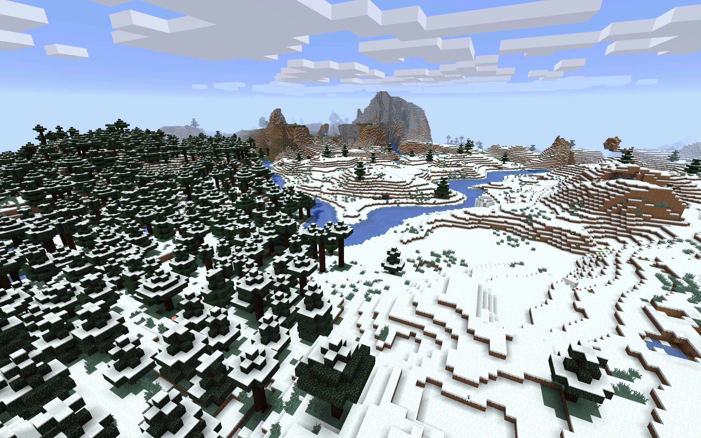
Az új játékosok véletlenszerűen megkapják Alex, vagy Steve kinézetét, de lehetőségük van sajátot is feltölteni és használni. A játékosok több nem játszható karakterekkel, „mobokkal” is találkozhatnak, mint például állatokkal, falusiakkal és ellenséges lényekkel. A passzív lények zsákmányszerzés céljából vadászhatóak, illetve csak nappal jelennek meg, míg az ellenséges lények éjszaka és sötét helyeken, némelyikük pedig a napfényen el is ég
-Itt egy kép Alex-ről és Steve-ről:
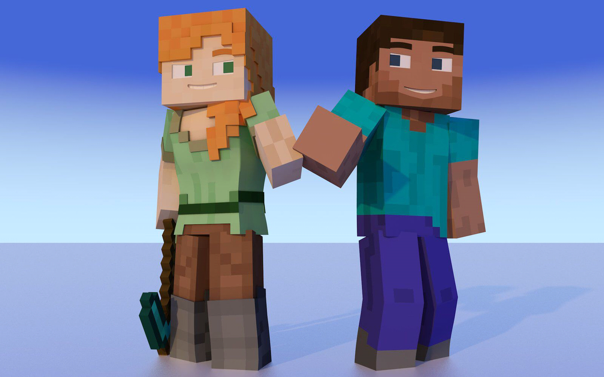
-De fel tölthetnek saját kinézetet is, például ilyet:
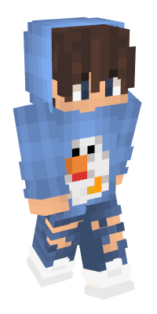
A játék az alap világon kívül két alternatív dimenzióval rendelkezik: az „Alvilággal” (Nether) és a „Véggel” (End). Az Alvilág egy pokolszerű világ, melyet a játékos által elkészített portálokon lehet elérni. Számos egyedi alapanyagot tartalmaz, köztük az egyik főellenség, a „Sorvasztó” (Wither) megidézéséhez szükséges elemeket is. A Vég kopár, lebegő szigetekből áll, és itt található meg a másik főellenség, a Végzetsárkány. A sárkány legyőzése egyfajta vége a játéknak, ez után fut le a stáblista végén Julian Gough ír költő versével. Ezt követően a játékos visszatérhet a játékba, és folytathatja azt.
-Alvilág (Nether) + Sorvasztó (Wither)
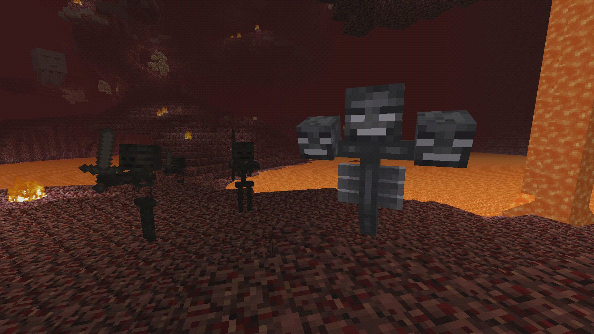
-Vég (End) + Végzetsárkány
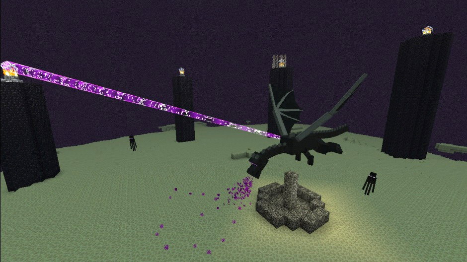